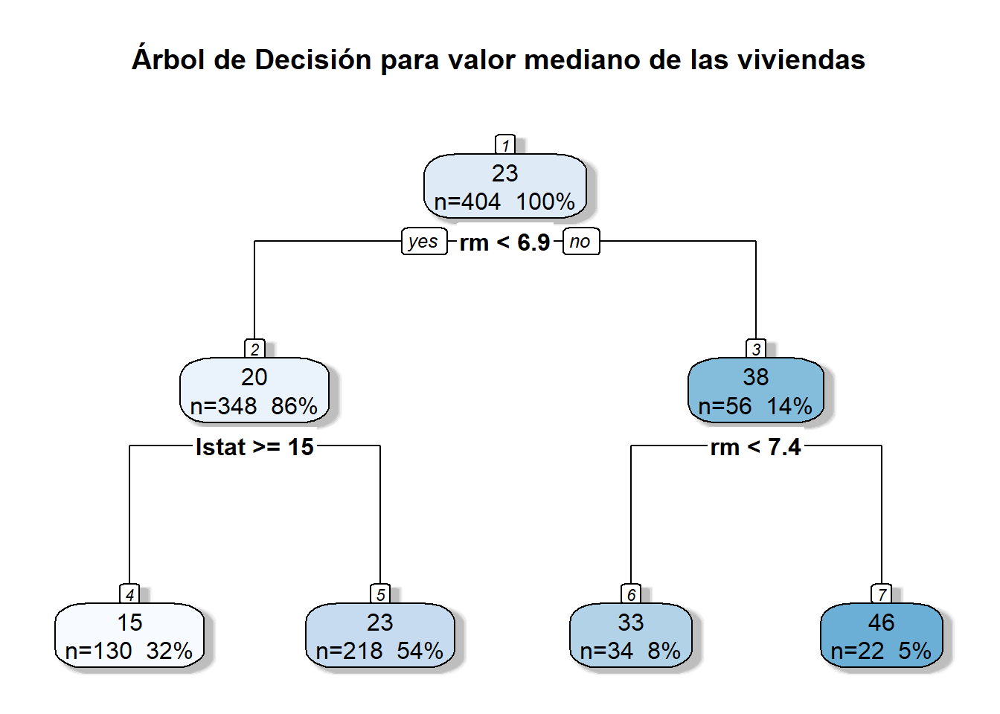
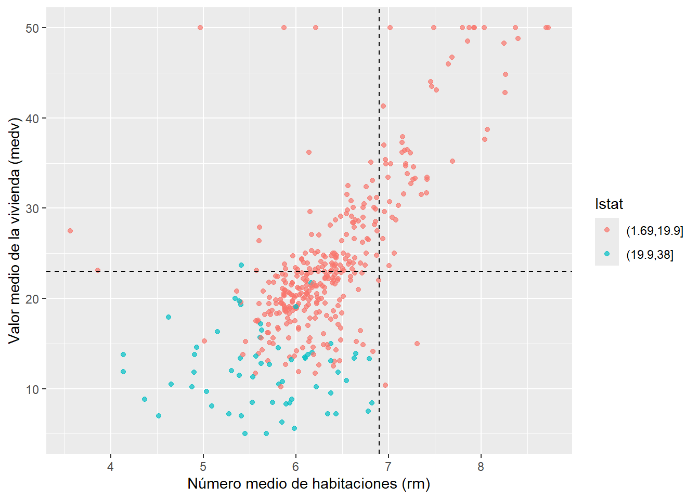

El conjunto de datos Boston contiene información del Censo de EE.UU. sobre el mercado inmobiliario en la zona de Boston. Boston Housing contiene información de 506 secciones censales del área metropolitana de Boston, Massachusetts, recopilada originalmente a partir del Censo de EE. UU. de 1970 y publicada por David Harrison y Daniel L. Rubinfeld en 1978
1 Cargue el conjunto de datos Boston y divida los mismos en un 80%
library(tidyverse)
── Attaching core tidyverse packages ──────────────────────── tidyverse 2.0.0 ──
✔ dplyr 1.2.1 ✔ readr 2.2.0
✔ forcats 1.0.1 ✔ stringr 1.6.0
✔ ggplot2 4.0.3 ✔ tibble 3.3.1
✔ lubridate 1.9.5 ✔ tidyr 1.3.2
✔ purrr 1.2.2
── Conflicts ────────────────────────────────────────── tidyverse_conflicts() ──
✖ dplyr::filter() masks stats::filter()
✖ dplyr::lag() masks stats::lag()
ℹ Use the conflicted package (<http://conflicted.r-lib.org/>) to force all conflicts to become errors
# A tibble: 1 × 6
number operation type trained skip id
<int> <chr> <chr> <lgl> <lgl> <chr>
1 1 step dummy FALSE FALSE dummy_A3FAD
3 Defina un modelo de regresión basado en un Árbol de regresión individual
boston_arbol <-decision_tree(tree_depth =2, # Limita la profundidad para mantenerlo explicablemin_n =10, # Mínimo de observaciones en un nodo para dividircost_complexity =0.01# Parámetro de complejidad (cp)) |>set_engine("rpart") |>set_mode("regression")
4 Ajuste el flujo de trabajo del Árbol sobre el conjunto de entrenamiento
New names:
• `.pred` -> `.pred...1`
• `.pred` -> `.pred...2`
5 Visualice la estructura del árbol resultante empleando la librería rpart.plot.
library(rpart.plot)
Cargando paquete requerido: rpart
Adjuntando el paquete: 'rpart'
The following object is masked from 'package:dials':
prune
arbol_engine <-extract_fit_engine(arbol_fit)rpart.plot( arbol_engine, type =2, extra =101, shadow.col ="gray", nn =TRUE,main ="Árbol de Decisión para valor mediano de las viviendas")
Warning: Cannot retrieve the data used to build the model (so cannot determine roundint and is.binary for the variables).
To silence this warning:
Call rpart.plot with roundint=FALSE,
or rebuild the rpart model with model=TRUE.

Identifique la variable seleccionada en el nodo raíz (root node) y analice su importancia.
RTA: la variable nodo raìz es rm: Número medio de habitaciones por vivienda. El algoritmo rpart evalúa todas las variables y elige la que mejor separa los valores de medv en dos grupos lo más homogéneos posible. La primera división en rm = 6.9 separa viviendas con menos habitaciones (predicción 15–23 mil USD) de viviendas con más habitaciones (33–46 mil USD). Esta variable fue elegida por el algoritmo porque produce la mayor reducción de impureza al dividir la muestra: las viviendas con menos de 6.9 habitaciones (86% de los casos) tienen un valor medio predicho de 20 mil USD, mientras que las de 6.9 o más (14%) alcanzan los 38 mil USD. La diferencia de 18 mil USD indica que rm es el predictor más fuerte del valor medio de la vivienda en este subconjunto de Boston
library(ggplot2)boston_train %>%ggplot(aes(x = rm, y = medv, colour =factor(cut(lstat, breaks =2)))) +geom_point(alpha =0.7) +labs(x ="Número medio de habitaciones (rm)",y ="Valor medio de la vivienda (medv)",colour ="lstat" ) +geom_vline(xintercept =6.9, linetype ="dashed", colour ="black") +geom_hline(yintercept =23, linetype ="dashed", colour ="black")

Tengo la siguiente inquietud. El concepto de nivel socio economico es un análisis en si mismo… ¿què pasarìa si lo eliminamos de la receta?
Árbol de decisión sin lstat
el árbol reemplazó esa división por nox (concentración de óxido nítrico), manteniendo la estructura general: primero separa por tamaño (rm), luego por calidad del entorno
PD: hay una variable que ese llama “black”. En teoría Representa la proporción de población afroamericana por localidad.
Según la búsqueda en internet:
Se calcula mediante la siguiente fórmula matemática: B = 100 × (Bk - 0.63)²
La fórmula utiliza una transformación cuadrática respecto al valor de referencia 0.63. Esto significa que el valor de la variable aumenta tanto si la proporción de población negra es muy baja como si es muy alta respecto a ese umbral, lo que complica su interpretación lineal directa.
Problemas éticos y obsolescencia: Hoy en día, este conjunto de datos está obsoleto y desaconsejado en la comunidad de ciencia de datos
Especifique un modelo Random Forest compuesto por 500 árboles, habilite la estimación de la importancia de variables por permutación.